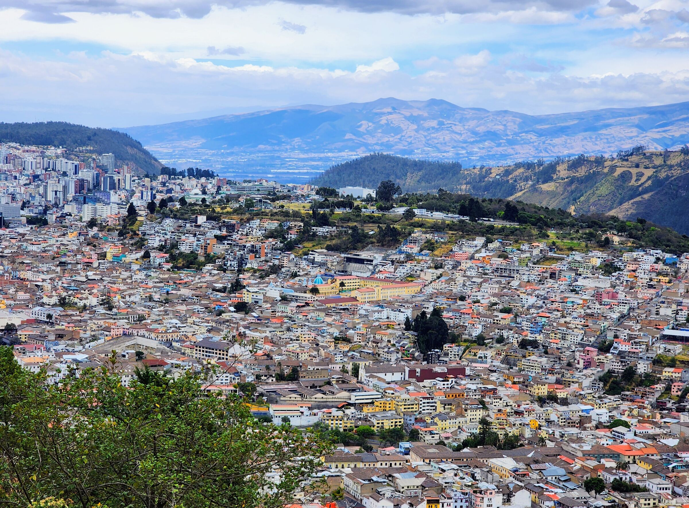
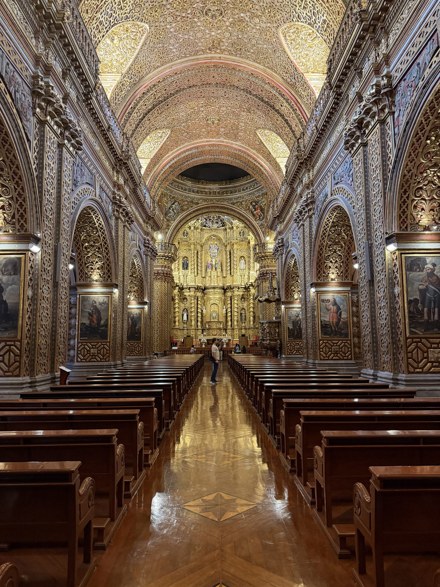
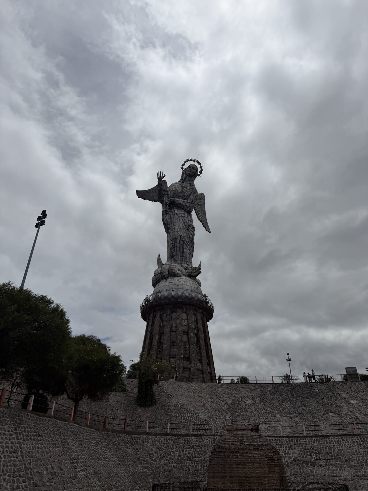
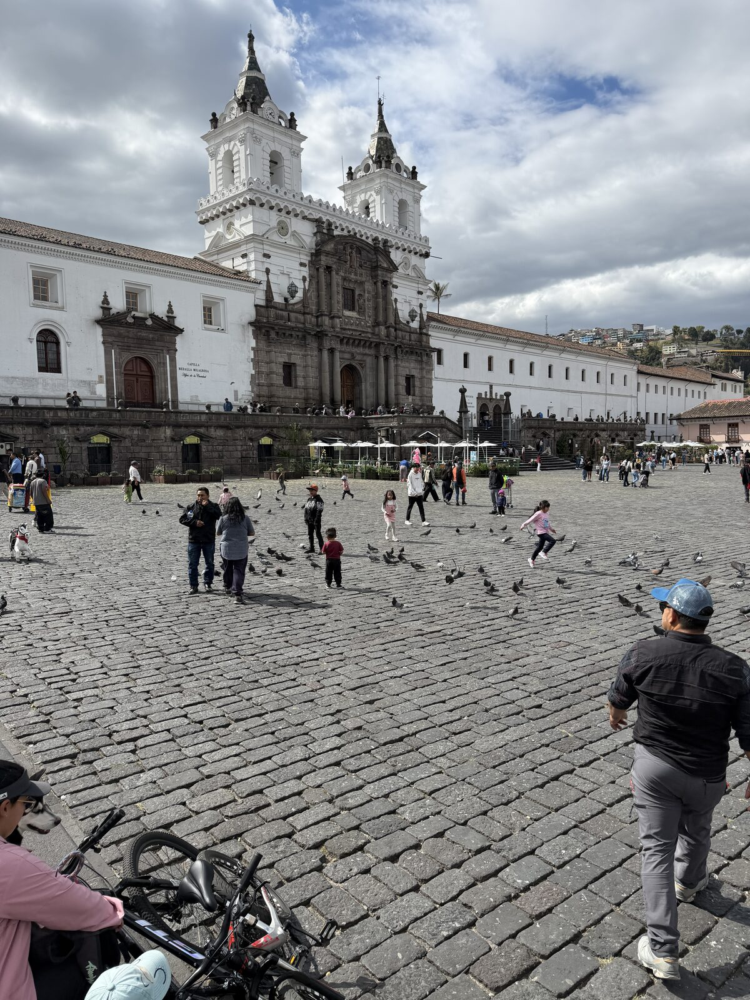
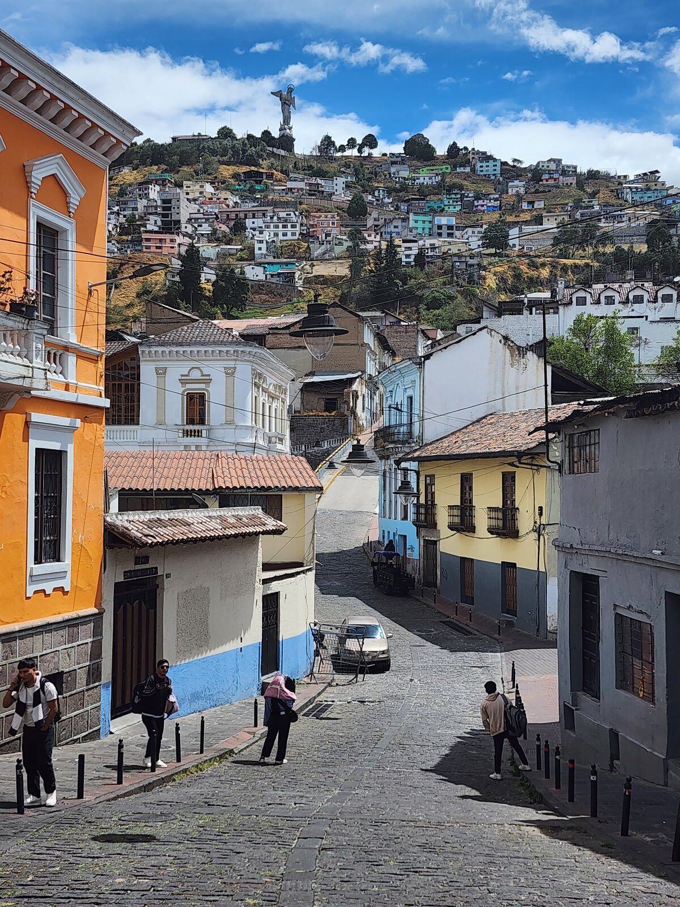
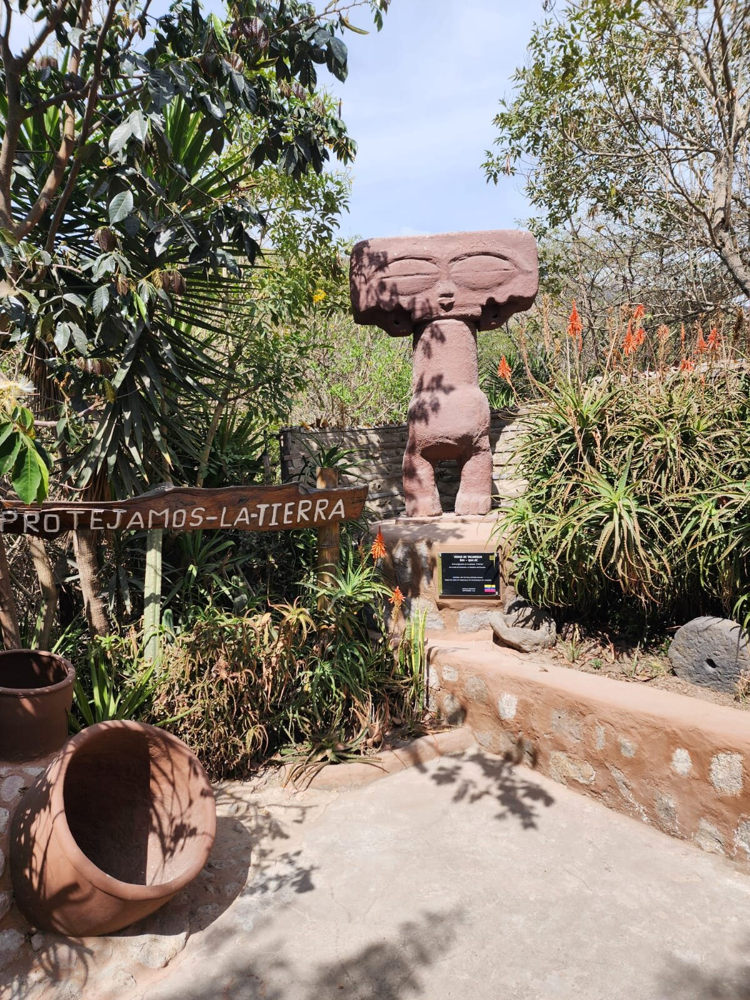
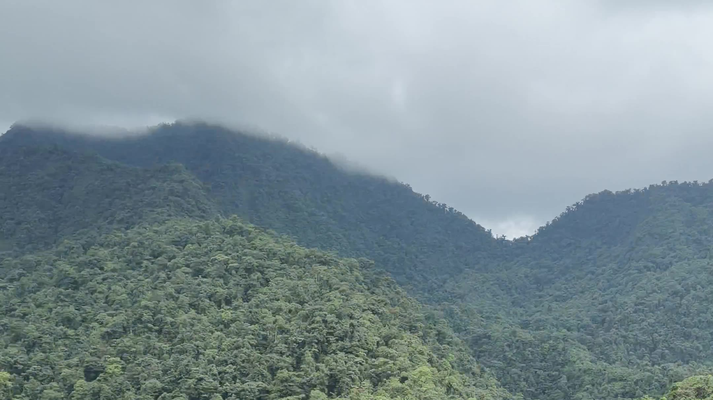
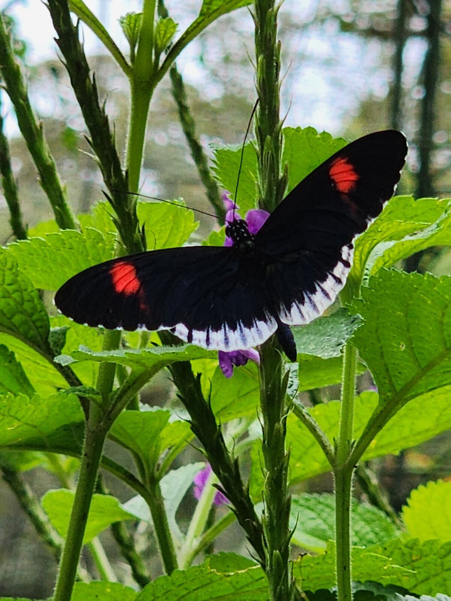
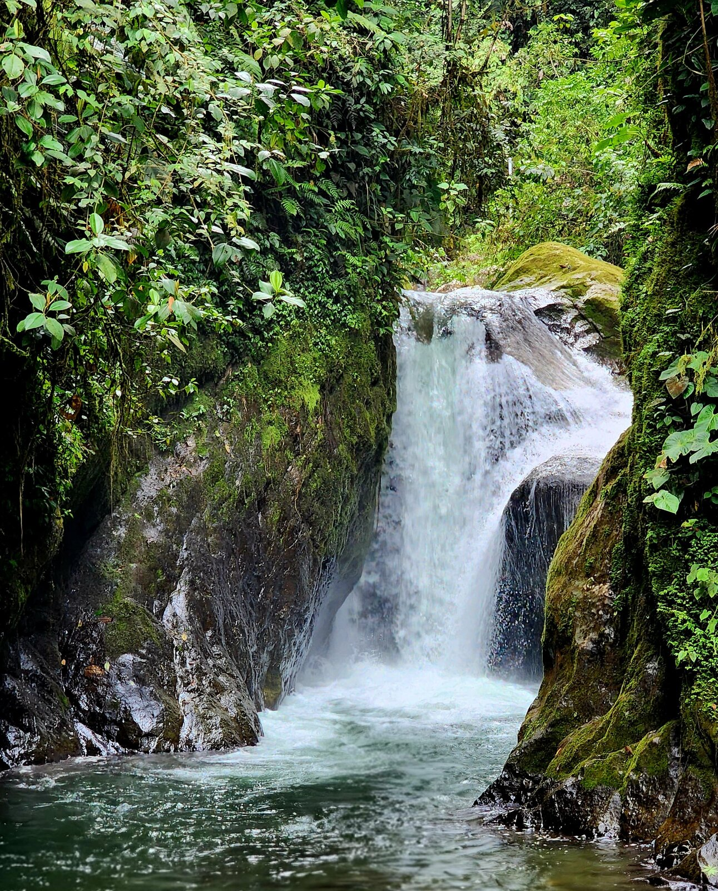
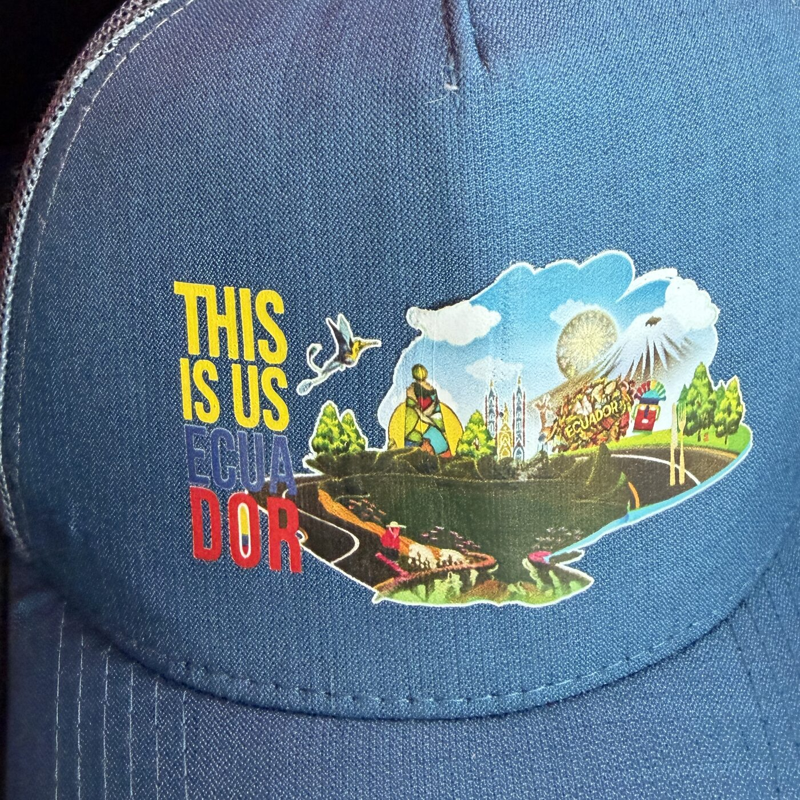

This is us Ecua dor
Quito, the Equator and the Mindo cloud forest, with a guide who was born here.
Private day tours in fluent English. Twenty-five years of showing people my country. I pick you up at the airport and I drop you off.

Day one · Quito and the Equator
Two thousand years of history, one line around the world
A day that begins above the city at the feet of the Virgin of Quito, moves through the finest colonial churches in Latin America, and ends standing with one foot in each hemisphere. Between the stops we eat.

-
The Virgin of Quito
We start on El Panecillo, the hill in the middle of the city, under a 41-metre winged Madonna. From here you see the whole valley and understand why the Inca, and then the Spanish, wanted this exact place.

-
The churches of the old town
San Francisco, begun in 1535 on the site of an Inca palace. La Compañía, where the Jesuits covered every surface in gold. We look at the art of the Quito School, and at who carved it, and what it cost them.

-
The streets and the stories
La Ronda, the Plaza Grande, the balconies and the bakeries. This is where I tell you about the independence, the dictatorships, the boom years and the crashes. I am not going to sell you a postcard version of my country.

-
The Equator
The Mitad del Mundo monument, and then the Intiñan museum on the GPS line, where water drains straight down, eggs balance on nails, and the Shuar shrunken heads teach a lesson about the Amazon that most visitors never hear.

We eat as we go
Lunch is part of the tour, and so is everything in between: ceviche the Ecuadorian way, locro de papa, helado de paila churned by hand in a copper pan, guaguas de pan from the old bakeries, a hot canelazo on a cold night, and chocolate from the cacao the best chocolatiers in the world fight over.
Day two · Mindo cloud forest
Two hours from Quito, a different planet
We drive down the western side of the Andes into the clouds. Mindo sits at 1,250 metres where the mountains meet the coastal forest, and more than 500 species of birds have been counted in the valley. You will not need binoculars for the hummingbirds.

-
Hummingbirds on your hand
Hold out your hand with a feeder in it and within a minute you have a dozen of them, hovering at your fingers, arguing over the sugar water. We stay as long as you want, and you will want to stay.
-
The butterfly sanctuary
A walk through the life cycle of the blue morpho and the owl butterfly, from egg to chrysalis to the ones that land on your shirt if you stand still.

-
Jungle hike and waterfall swim
A cable car over the canyon, then a trail through the forest to the waterfalls. Bring something to swim in. The water is cold and you will not regret it.


Giovanni
I was born and raised in Quito. I have been a guide for twenty-five years, and before that I studied linguistics and taught English, which is why my guests never have to slow down for me.
I love this country, and loving it means telling the truth about it. The gold in the churches came from somewhere, and the Spanish did not find an empty valley. If you want the version with the hard parts left in, you are my kind of traveller.
Every tour is private, so it goes at your pace, in the order you want, with as many detours as you like. I pick you up at the airport when you land and drop you off when you leave.
- Born and raised in Quito
- 25 years guiding
- Linguist and former English teacher
- Airport pickup and drop-off
- Private tours only
Good to know
- Altitude
- Quito is at 2,850 metres. Take the first day slowly, drink water, and tell me if you feel it. Mindo is much lower and warmer.
- Weather
- Quito has all four seasons in one day: bring layers, a rain jacket and sunscreen. Mindo is humid: swimwear, a towel, and shoes that can get muddy.
- Money
- Ecuador uses the US dollar. Small bills are useful for markets and street food.
- Price
- It depends on the day, the group and the season. Write to me with your dates and I will send a quote with everything included and nothing hidden.
Come and see us
Tell me when you are arriving and what you would like to see, and we will build the days together.